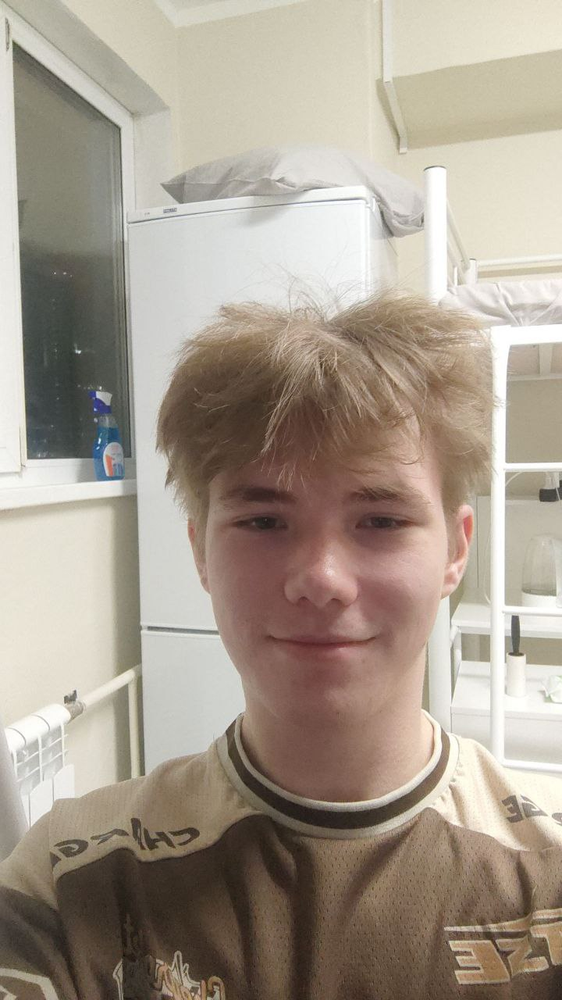

Команда проекта
LifeGuard разрабатывается индивидуально Кузнецовым Данилой Ростиславовичем

Кузнецов Данила Ростиславович
Саунд-дизайнер, разработчик
Обязанности в проекте:
- Разработка концепции звукового дизайна
- Запись и обработка звуковых эффектов
- Создание музыкального сопровождения
- Программирование звуковых систем игры
- Тестирование звукового восприятия
Достижения:
Создал уникальную библиотеку из 147 звуковых эффектов для различных производственных ситуаций, разработал систему пространственного звука для VR-версии проекта.
Личный вклад в проектную деятельность:
Полностью отвечаю за звуковое оформление игры, включая:
- Запись реальных звуков на производстве (8 часов полевых записей)
- Обработку и каталогизацию звуков (более 40 часов работы)
- Интеграцию звуковой системы в игровой движок
- Тестирование звукового восприятия с фокус-группами